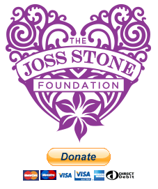

Joss
About
“My mission is to explore and understand the universal language of music in every country on the planet.”
Joss Stone a singer-songwriter from Devon, UK has been captivated by soul music since she was a little girl. As she moved through her early teens she intuitively honed her now trademark gravely-but-lustrous vocals by singing along to Aretha’s Franklin’s Greatest Hits. She began pursuing a singing career at thirteen, securing a record deal at 15, and recording her star-making Critically acclaimed debut album, The Soul Sessions, which was released in 2003. Grammy and Brit award-winning Stone has since released 7 studio albums as she has continued in her journey of musical exploration. Her love of music and fierce independence has led Stone to break away from the constraints of being tied to a label and has enabled her to explore many different genres of music. The Joy that she finds in her chosen artistry has helped her to forge ahead, always looking to break new ground both musically and in her life. It is evident that Stone is an independent soul. A true free spirit. Some may call her rebellious, others would say that she is a young woman who is completely confident in her chosen direction and is at peace with all that that means. More info...
Total World Tour
Her most audacious project to date in which she attempts to perform in over 200 countries. Amidst her travels she collaborates with local artists.
Karolina Gocheva ft. Joss Stone - Macedonia


The Joss Stone Foundation
The Joss Stone Foundation will ultimately support more than 200 charities across the globe as Joss completes her world tour. The primary aim is to help raise public awareness and support for these charities.